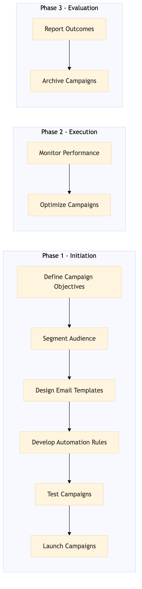

This process document outlines the email marketing and lifecycle automation strategy for Expedia Group's OTA and TMC systems, focusing on enhancing customer engagement and loyalty.
| Trigger | The initiation of a new marketing campaign or the need to automate an existing email marketing workflow. |
| Outcome | Successful execution of email campaigns with high open rates, click-through rates, and conversion rates, leading to increased customer satisfaction and loyalty. |
| Systems | Salesforce Snowflake Tableau AWS SageMaker Kafka Expedia Open World Partner Central TravelAds EVC |

Click to enlarge
| Step | Name & Pain Point | Role | System | Input | Output | KPI | Flags |
|---|---|---|---|---|---|---|---|
| 1.1 | Define Campaign Objectives Aligning marketing goals with business objectives | Marketing Manager | Salesforce | Campaign goals, target audience, KPIs | Campaign brief | Clear objectives and measurable success criteria | ⚠ Exception |
| 1.2 | Segment Audience Data privacy and compliance | Data Analyst | Snowflake | Customer data, segmentation criteria | Audience segments | Accurate and relevant audience targeting | |
| 1.3 | Design Email Templates Consistency across different platforms | Creative Designer | Tableau | Campaign brief, audience insights | Email templates | Engaging and visually appealing designs | ⚠ Exception |
| 1.4 | Develop Automation Rules Integration with multiple systems | Automation Specialist | AWS SageMaker, Kafka | Campaign brief, audience segments | Automation scripts | Efficient and effective automation workflows | ◆ Decision |
| 1.5 | Test Campaigns Comprehensive testing coverage | QA Engineer | TravelAds, EVC | Email templates, automation scripts | Test results | Identify and fix issues before launch | ◆ Decision |
| 1.6 | Launch Campaigns Technical issues during launch | Marketing Manager | Expedia Open World, Partner Central | Approved email templates, automation scripts | Campaign launch | On-time and successful campaign deployment | ⚠ Exception |
| 1.7 | Monitor Performance Real-time analytics and reporting | Data Analyst | Snowflake, Tableau | Campaign data | Performance metrics | Track key performance indicators (KPIs) | ◆ Decision |
| 1.8 | Optimize Campaigns Balancing testing and production | Marketing Manager | Salesforce, TravelAds | Performance metrics, campaign brief | Optimized campaigns | Improved KPIs through optimization | ◆ Decision |
| 1.9 | Report Outcomes Data interpretation and storytelling | Marketing Manager | Salesforce, Tableau | Campaign performance data | Final report | Clear and actionable insights for future campaigns | ⚠ Exception |
| 1.10 | Archive Campaigns Data storage and retrieval | Data Analyst | Snowflake, Tableau | Campaign data, final report | Archived campaigns | Organized and accessible campaign history |